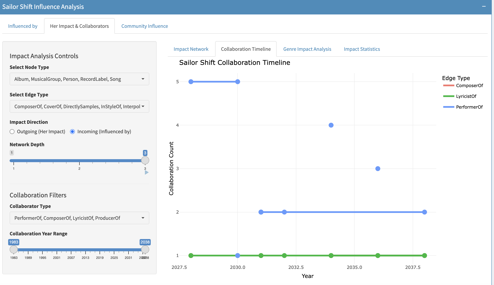

Findings of Mini-Challenge 1
üéµ Insights into Sailor Shift, Oceanus Folk, and the Next Generation of Rising Stars
Through a series of visual analytics and network-based visualizations, we have uncovered deep insights into Sailor Shift’s career, her influence across genres, and the evolving identity of the Oceanus Folk community. Below is a synthesis of findings drawn from interactive exploration of the musical influence graph:
üé§ Sailor Shift‚Äôs Artistic DNA & Legacy
Influenced by others
From the 2nd network depth:
Across the three visualizations of second-degree influence, we gain a nuanced understanding of how Sailor Shift’s artistry has been shaped by the broader musical landscape. The first two plots show that she draws inspiration from a diverse and layered mix of songs, albums, musical groups, and individuals, with influence types ranging from InStyleOf and PerformerOf to CoverOf, InterpolatesFrom, and LyricistOf. These edge types reveal her stylistic adaptability and lyrical depth, often engaging in reinterpretation and reimagination rather than imitation.
The third visualization, which focuses on notable nodes, highlights that many of Sailor Shift’s most impactful influences stem from high-profile works and creators. This suggests that her rise may be partially driven by alignment with established, reputable artists and their stylistic legacies. The density of notable nodes indicates that she has strategically positioned herself within a web of influential musical threads — absorbing, reworking, and echoing their signature styles.
Together, these visualizations depict Sailor Shift as not only a product of the Oceanus Folk genre but also a curator of its finest traditions, synthesizing both mainstream and niche influences into a sound that feels authentic yet elevated. Her indirect influences — passed through highly notable intermediaries — demonstrate how a rising artist can build cultural credibility while also innovating within tradition.
From the 3rd network depth:
By expanding the influence network to three layers, we uncover the deep and expansive web of creative lineage behind Sailor Shift’s music. This view illustrates not just who directly influenced her, but also who influenced those influencers — providing a glimpse into the cultural and artistic ancestry of her sound. The network becomes more interconnected and dense, with many secondary and tertiary songs, albums, and artists feeding into the evolution of her musical identity.
Her impact & collaborators
The graph illustrates that Sailor Shift’s musical influence radiates outward through diverse roles: as a producer, lyricist, stylistic inspiration, and even being referenced lyrically. She not only performs but actively shapes the creative identity of collaborators like Cassian Storm, The Phantom Operators, and Claire Holmes.
The presence of multiple record labels (e.g., Oceanic Records, Coastal Harmony Studios) and musical groups demonstrates that Sailor’s influence extends beyond individuals to organizational and stylistic levels. Several collaborators such as Daniel O’Connell and Silver Veil also serve as bridges to larger creative clusters, amplifying her reach.
Notably, the graph also highlights two-way influence, as some connections (like InterpolatesFrom and LyricalReferenceTo) suggest mutual artistic dialogue rather than unidirectional impact.
Collaboration Timeline

This suggests that as her career progresses, she becomes increasingly engaged as a performer across a variety of projects, possibly reflecting growing demand for her unique artistic voice. The timeline also hints at a potential creative peak or resurgence around 2030–2035, with a surge in collaborations.
Her Impact by genre and influence types
Sailor Shift’s influence on the music landscape is both broad and genre-defining, with Psychedelic Rock emerging as the most impacted genre, suggesting her strong association with experimental and atmospheric sounds. She engages with others primarily as a Performer (99 instances), far surpassing roles like LyricistOf or ComposerOf, signaling her performance-driven influence. Over time, as seen in the Collaboration Heatmap, her performer-based collaborations peak around 2030–2032, while her lyrical and compositional collaborations remain more selective and episodic. The data highlights her as a genre-shaping artist, with both direct and indirect forms of influence—such as InStyleOf and DirectlySamples—showing her artistic footprint across multiple dimensions.
Community Network
The visualizations reveal that Sailor Shift is the most active and central collaborator in the network, with the highest number of collaboration counts—especially as a PerformerOf, followed by LyricistOf and ComposerOf roles. Among all artists, she stands out significantly in terms of connectivity, underscoring her leading role in shaping musical outputs. The bar chart also shows 116 notable works associated with her and a total of 185 connected nodes, indicating both breadth and depth of influence across the music ecosystem. These metrics highlight her prominent footprint in the community and position her as a pivotal figure in the Oceanus Folk genre and beyond.
üß≠ 3. Talent Scoring & Emerging Artist Radar
Score Comparison:
The radar comparison clearly shows that Sailor Shift outperforms other emerging artists such as Kimberly Snyder and Szymon Pyć across all four talent dimensions—PageRank, Degree Centrality, Style Similarity, and Notable Works Count. This indicates she is not only globally influential within the music network (high PageRank) and highly connected to other artists (high Degree Centrality), but also stylistically aligned with the Oceanus Folk genre and prolific in producing notable works. In contrast, Kimberly and Szymon demonstrate more limited profiles, suggesting that while they may be upcoming talents, they are still in the early stages of influence building. Sailor Shift’s dominance across all axes solidifies her position as a benchmark figure for rising stars within the genre.
Yearly Heatmap:
The heatmap illustrates a clear surge in song production across niche genres such as Oceanus Folk, Lo-Fi Electronica, and Indie Folk starting around 2010, with peaks occurring between 2021 and 2028. These genres consistently show high song counts, as indicated by the bright green to yellow cells, signaling a period of rapid diffusion and growing popularity. In contrast, more experimental genres like Post-Apocalyptic Folk and Avant-Garde Folk remain relatively sparse, suggesting they are still emerging or niche.
This pattern implies that Sailor Shift’s influence likely aligns with the upward trajectory of these central genres, and her activity may have played a role in catalyzing the surge in creative output
Cumulative Curve
The cumulative trend chart highlights a remarkable surge in Dream Pop, which reached 733 cumulative works by 2030, far outpacing other genres. This aligns with the earlier yearly heatmap, where Dream Pop, Indie Folk, and Indie Pop showed concentrated activity between 2015 and 2030, indicating their dominant role in shaping the genre landscape. This rapid growth suggests strong creative momentum and possibly deeper community or industry support behind these styles. Such genre trajectories imply that influential artists—like Sailor Shift—may have played a key role in amplifying these genre trends through their collaborations and impact.